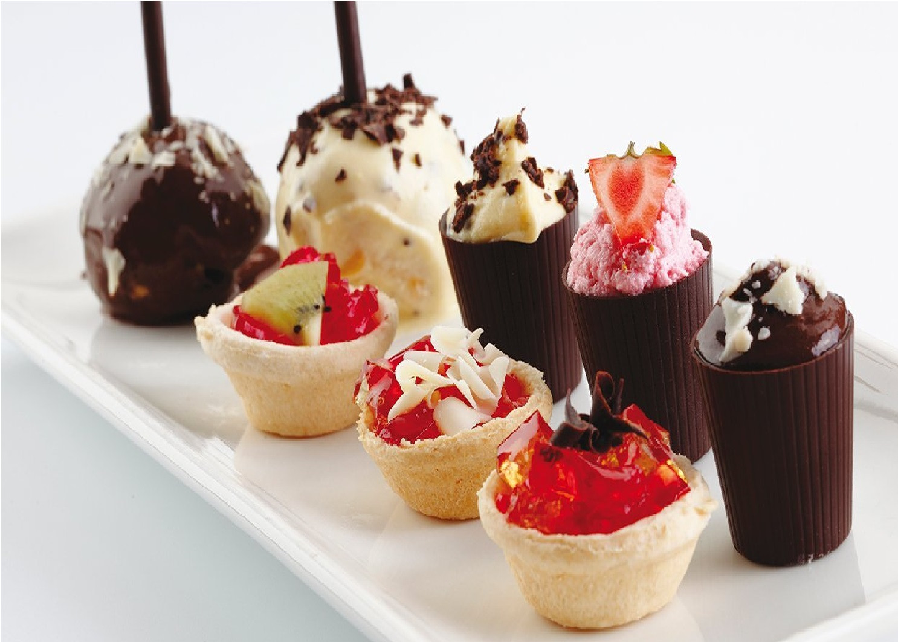
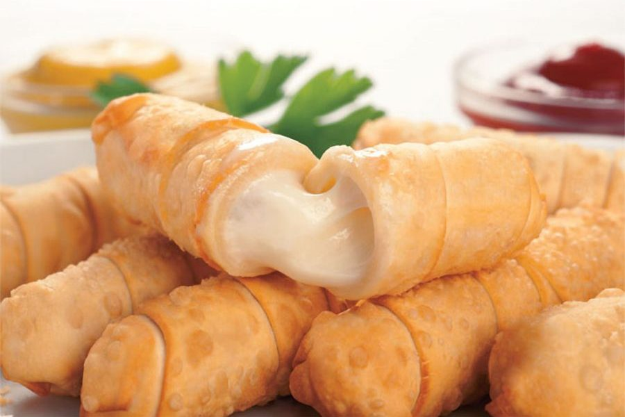

Comida internacional
prepara lo que quieras sin importar en que pais te encuentres




Instrucciones Lleva el agua al fuego y disuelve el azúcar. Apaga y deja refrescar. Combina el sirope con el jugo de limón en una jarra junto al agua. Vierte la limonada en moldes de hielo y distribuye las rebanadas de limón y hierbas en las cavidades de los moldes. Lleva al congelador hasta formar cubos de hielo firmes, mejor de un día para otro. Sirve el agua con gas con los cubos de hielo de limonada.
Cocine el maíz pelado hasta que quede suave. Se escurre y se enfría. Se deja escurrir, se muele y se reserva. A parte, sofría la gallina con los pimientos (ajies), la cebolla, el cilantro, el ajo, la pimienta y la sal. Luego agréguele la pasta de tomate, la salsa de tomate y el caldo concentrado. Se deja cocinar 10 minutos y luego, se le añade agua hasta que cubra bien la gallina. Se tapa y, a fuego lento, se deja cocer hasta que esté suave. Colóquele las pasitas, las aceitunas y alcaparras, y se deja cocinar por 20 minutos más. Finalmente, añádale los guisantes (petits-pois). Si tiene muy poca agua se le puede verter un poco más. Cocer hasta que los guisantes están cocidos. Cuélalo todo y agrega el caldo a la masa de maíz. Amasa bien hasta que quede todo bien repartido y suave. Lave bien las hojas de plátano, luego introdúzcalas en una olla con agua hirviendo y escúrralas enseguida. Corte los hilos de pabilo, lo suficientemente largos que le alcance para amarrar el tamal. En cada hoja se vierte un cucharón de masa, encima se pone una presa de gallina con las verduritas y luego se vierte medio cucharón más de masa, se envuelve y ata. Se repite este procedimiento hasta emplear toda la masa. En una olla grande de agua hirviendo se introducen los tamales y se cocinan una hora. Al sacarlos quedan listos para servir.